Homemade Telecaster: sick tunes, some bonework, and a motherload of sanding

NOTE: this is not a tutorial on how to make a guitar! I did some pretty jank things with the limited tools I had. Please do proper research if you decide to get into luthiery.
In the summer of 2019, I suddenly got super into The Beatles for some inexplicable reason. I listened to their albums on loop, analyzed their inter-band relationships, and lamented their breakup. As a child of Chinese immigrants, I was never exposed to The Beatles' music growing up, instead listening mainly to classical pieces to supplement my piano lessons. So classic rock wasn't so classic to me; this was something really novel.
I decided I wanted to play their songs on the guitar. I didn't even know how to play guitar, so I set about learning. I borrowed my friend's acoustic, but it didn't have the same feel as the tangy electric guitars that The Beatles played. But I didn't feel like sinking money into an electric guitar, and I felt like I couldn’t find one that would fit my small hands. This is when I resolved to build my own.
I had pretty limited experience in woodworking, but I knew I could make this work. I settled on a semi-hollow telecaster design to mix electric and acoustic tones. I kept the scale length at the standard 25.5", but I made the neck slimmer to fit my hands. I CADed this template up on Autodesk Inventer as a router guide.
I laser cut the MDF router guide out of 1/2" MDF, which the laser did NOT like lol. Took me so many passes to cut it. In the meantime, I had glued together some 1/2" poplar boards for the actual body of the guitar. Using the router guide, I cut out the general shape of the telecaster and the hollow parts. I drilled out the hollow parts first before using the router to clean things out to save time.
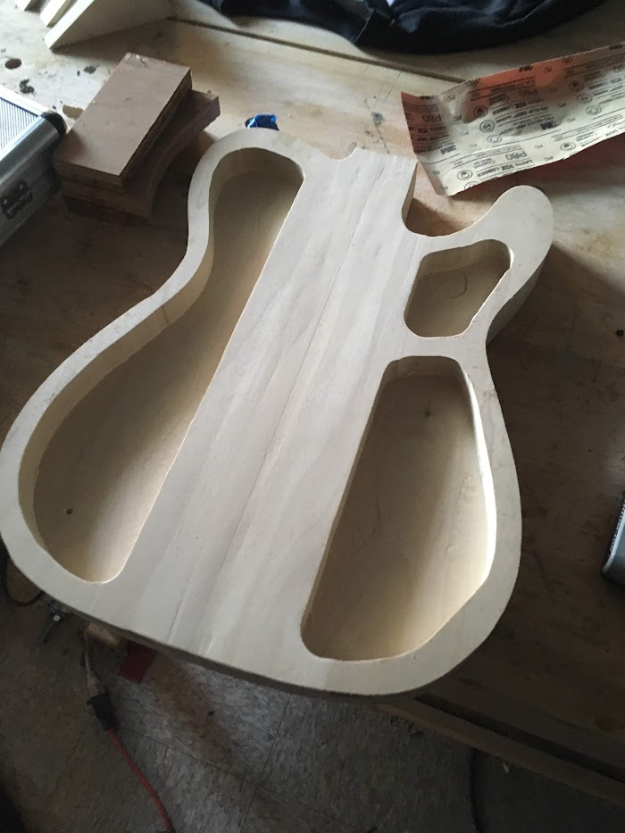
I laser cut a separate router guide for the top of the guitar to cover all the holes. After routing the top, I glued the base and top together. C L A M P S were used.
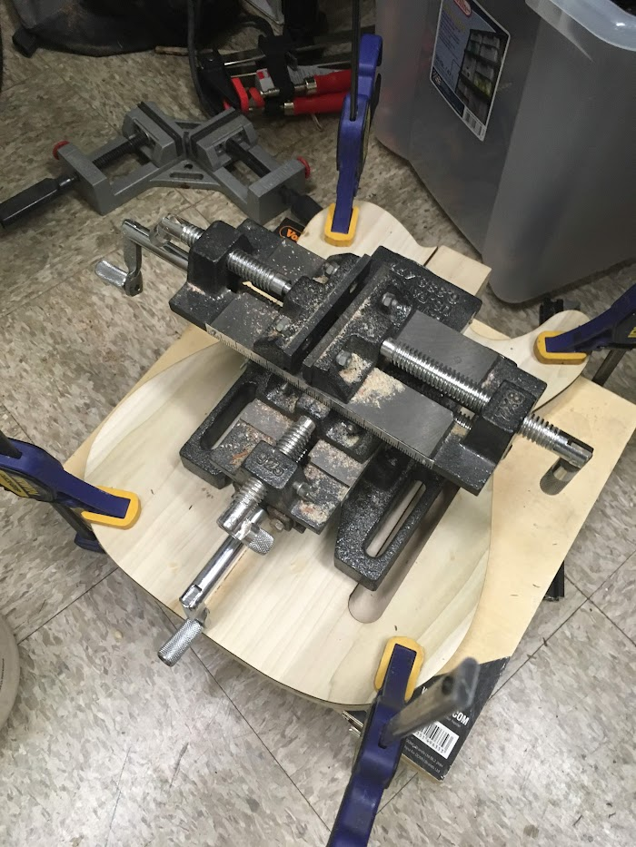
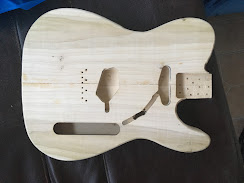
While I waited for the glue to seal overnight, I worked on the neck. This was by far the hardest part, and I'd recommend a luthier n00b to buy a neck before attempting to make their own. I had routed out the outline of the neck out of a 1" maple board, but sanding the back of the thing so it was smooth took forever, even with an electric sander. I got the neck to a reasonable curvature eventually, but it definitely needs smoothing. I laser cut a fretboard out of Home Depot walnut and after inserting the truss rod, I glued it onto the neck's base. I even added the little guide dots. Usually, those dots are made of pearl, but I had nothing of the sort, so I used a mixture of white paint and salt (??) to fill those holes in. This is peak lo-fi.
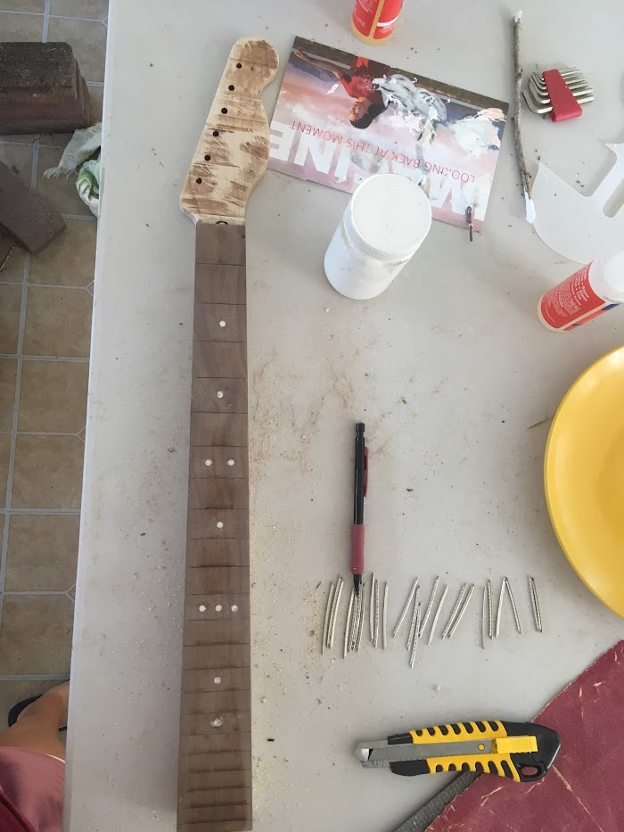
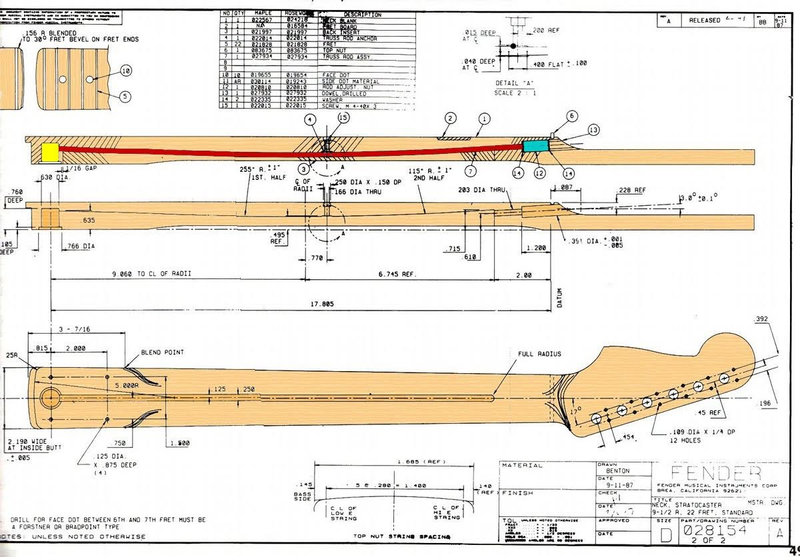
Hammering the frets in was also difficult. I had ordered some frets from Alibaba, but it turned out they were for a different neck curvature. This meant I had to do some extra finagaling to get the frets to fit my fretboard. Alas, there are still some bumps, but it's good enough for me to solo Hotel California.
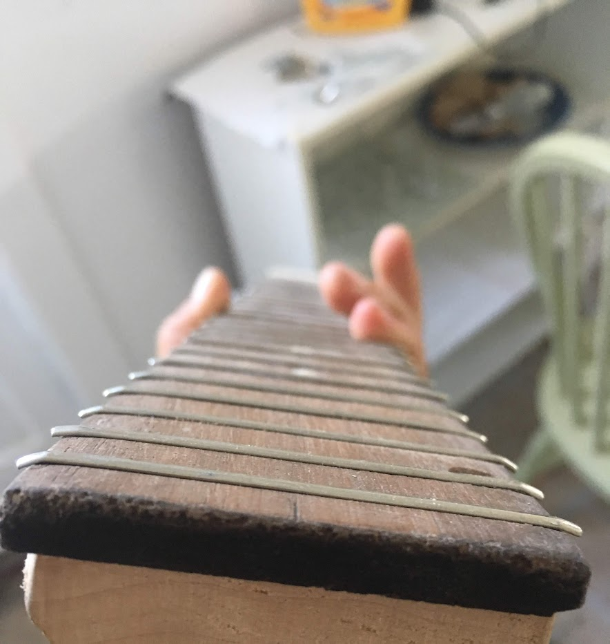
I made the nut (the part at the top of the fretboard where the strings hold tension) next. Most nuts are made of bone, and mine is no different. My dad and I made a late-night Safeway run to buy a bone-in beef shank. We ate it, sucked the marrow out of the bone, and headed to MakeX to shape the bone. Foolishly, I started out by using a wood bandsaw to cut the piece of bone, thinking it wouldn't be so bad. DO NOT DO THIS. Bone's much harder than a wood bandsaw can handle, and I ended up almost igniting it and filling the room with the acrid scent of burnt bone. I resorted to the hacksaw, a safer but slower tool.
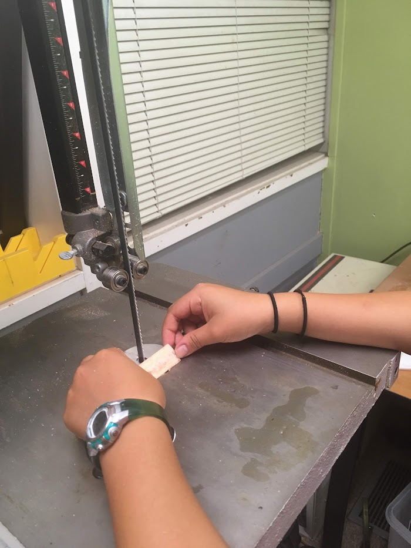
pls don't do this
I drilled holes for the pegs and put the pegs in. Pretty straightforward.
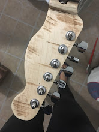
With the neck and body finished, it was assembly time. I screwed the neck onto the base, attached the bridge (the metal part on the body that holds the end of the strings), then attached the strings. I had to do some fine tuninng to cut the grooves in the nut to hold the strings.
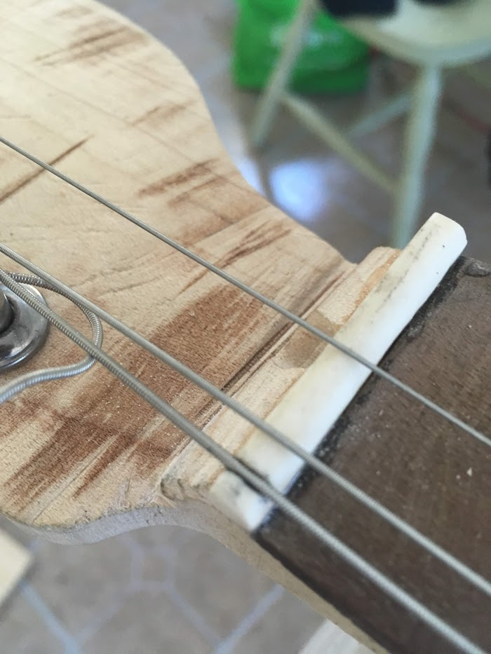
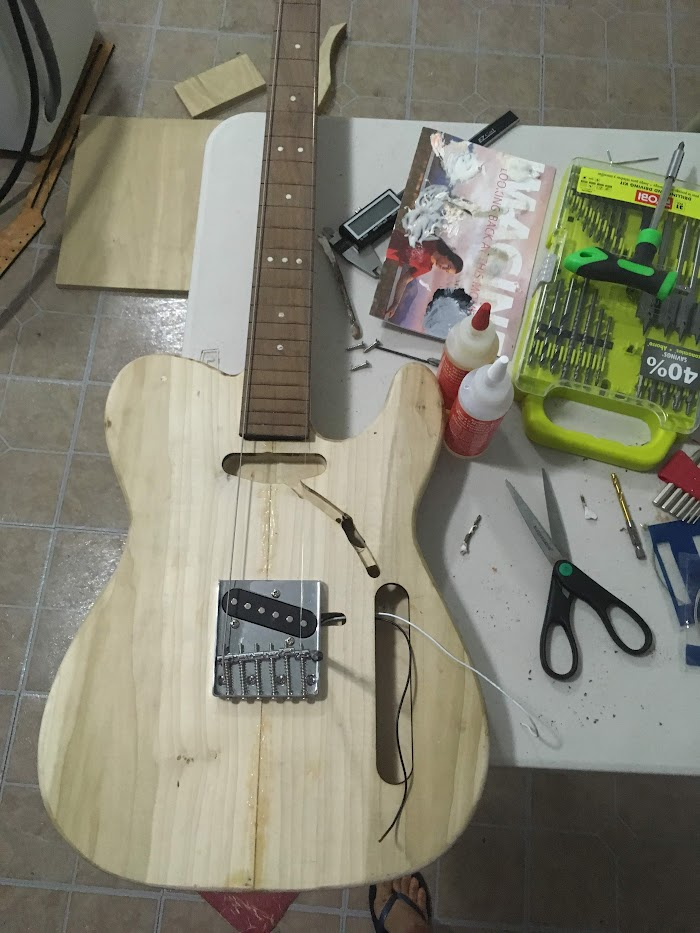
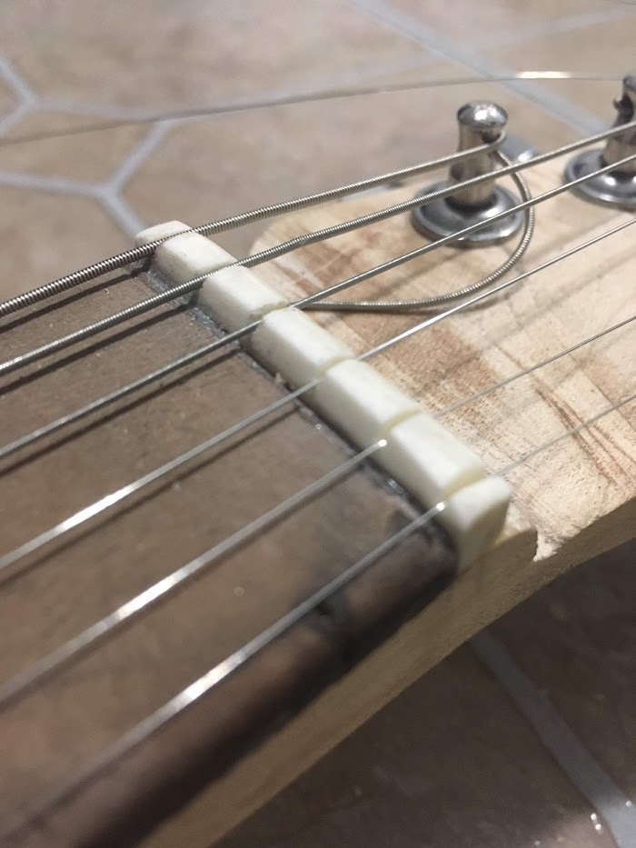
Also, I found that the E and B strings, the highest two strings, kept slipping to a lower tension while I tuned it. To fix this, I made a makeshift tensioner out of a screw and washer. Tensioning problems resolved after that.
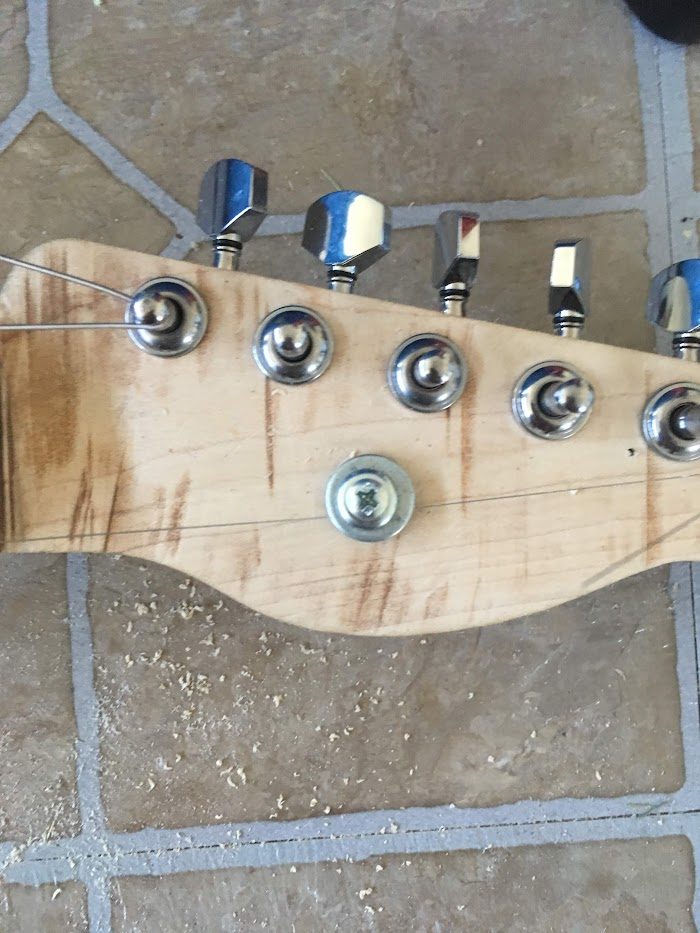
I put in the electronics following the schematic below, then laser cut a custom pick guard. It's all coming together now.
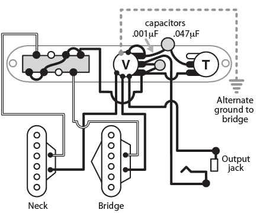
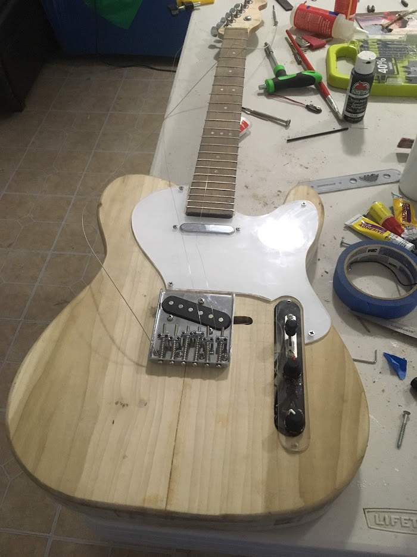
At last, I painted an abstract-looking nautilus on the body. Finished! (but to be quite honest, I never am)
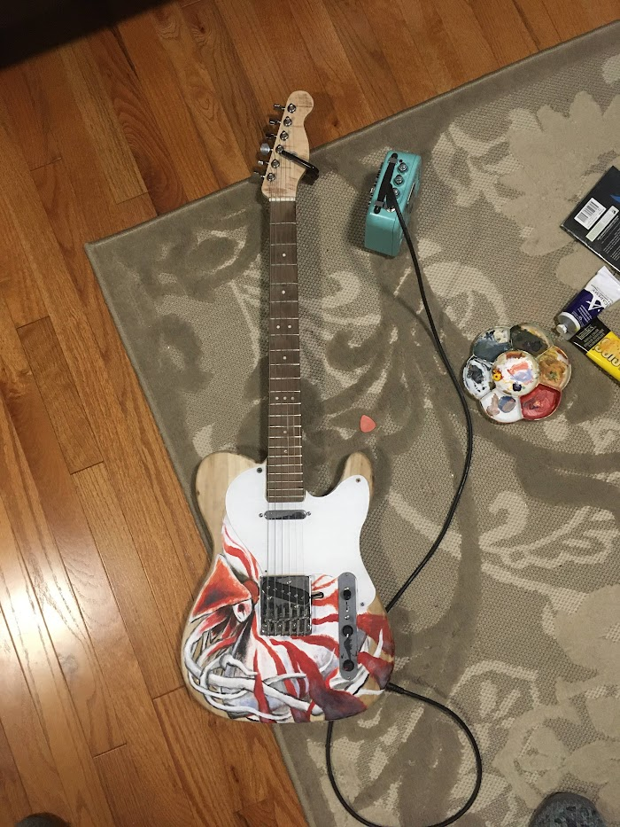
Here's a video of me actually playing the thing. It's "Here Comes the Sun." I think it's pretty good after playing the guitar for just a month!